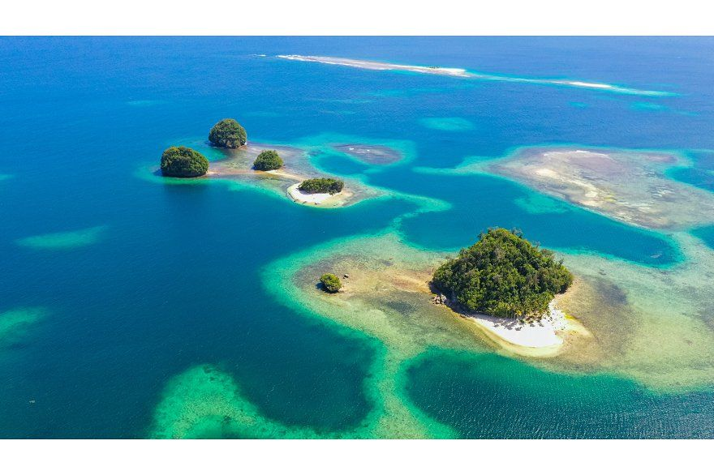
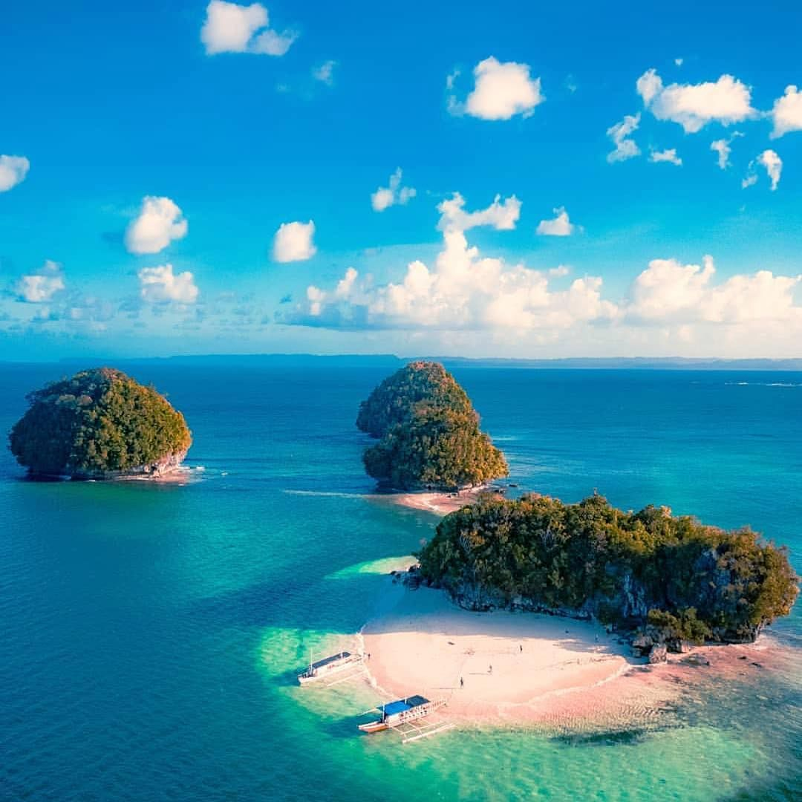
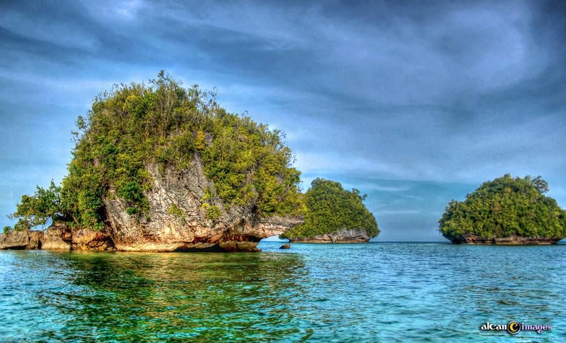

The Britania Group of Islands is a stunning cluster of small islets known for their powdery white sand and crystal-clear waters. Located along the coast of San Agustin, these islands are often compared to famous tropical destinations due to their pristine beauty. The area consists of more than 20 islands, though only a few are frequently visited for tourism. Each island features unique characteristics, including sandbars, rocky edges, and lush vegetation. The surrounding waters are calm and shallow, making them ideal for swimming and exploration.
The scenery in Britania is characterized by vibrant blue waters that contrast beautifully with the white sand beaches. The islands are surrounded by coral reefs, adding ecological value and enhancing their visual appeal. Visitors often describe the area as peaceful and untouched due to minimal commercial development. The natural beauty of the islands creates a relaxing and refreshing environment. Overall, the Britania Group of Islands offers a tropical paradise experience for travelers.


The Britania Group of Islands has long been part of the livelihood of local fishing communities in San Agustin. Before becoming a tourist destination, the islands were primarily used for fishing and occasional shelter by fishermen. Over time, their natural beauty attracted attention from travelers and local visitors. Word of mouth and social media exposure helped promote the islands as a must-visit destination. This gradual recognition led to the development of organized tourism activities.
Local government units and communities worked together to manage tourism while preserving the environment. Efforts were made to maintain cleanliness and protect marine life in the area. The introduction of island-hopping tours contributed to the economic growth of nearby communities. Despite increased tourism, the islands have remained relatively unspoiled. Today, Britania is recognized as one of the top coastal attractions in Surigao del Sur.
The Britania islands offer basic amenities designed to support tourism without disrupting the natural environment. Some islands provide simple cottages and shaded areas where visitors can rest. Local boat operators offer island-hopping services that allow tourists to explore multiple islets. Food vendors are available in certain areas, offering fresh seafood and refreshments. The facilities are kept minimal to preserve the natural beauty of the islands.
Visitors can enjoy a variety of activities that highlight the coastal environment. Swimming in the clear waters is one of the main attractions. Snorkeling is also popular due to the presence of coral reefs and marine life. Beachcombing allows visitors to explore the unique features of each island. The peaceful surroundings make it ideal for relaxation and leisure activities. These experiences create a memorable island adventure.


Tourists visiting Britania can participate in exciting island-hopping tours that cover several islets in one trip. Each island offers a different experience, from sandbars to rocky formations. Swimming and sunbathing are common activities due to the calm and clean waters. Photography is highly popular because of the scenic views and vibrant colors. Visitors often capture the beauty of the islands during sunrise and sunset.
Group activities such as picnics are also enjoyed on selected islands. Tourists can relax under the sun while enjoying the coastal breeze. Snorkeling allows for close interaction with marine life. Some visitors prefer simply exploring and walking along the shorelines. The diversity of activities ensures that every visitor finds something enjoyable. Overall, Britania offers both adventure and relaxation.
Travelers usually reach the area by road from Butuan City or Davao City, taking 4–6 hours to San Agustin, followed by a short tricycle ride to Britania port. Local boat operators offer island-hopping tours that typically include Boslon, Hagonoy, Naked, and Hiyor-hiyoran Islands, with tour prices based on boat size and duration. Basic beachfront accommodations and small resorts, such as Joan’s Beach Resort and McArthur’s Place, cater to visitors.